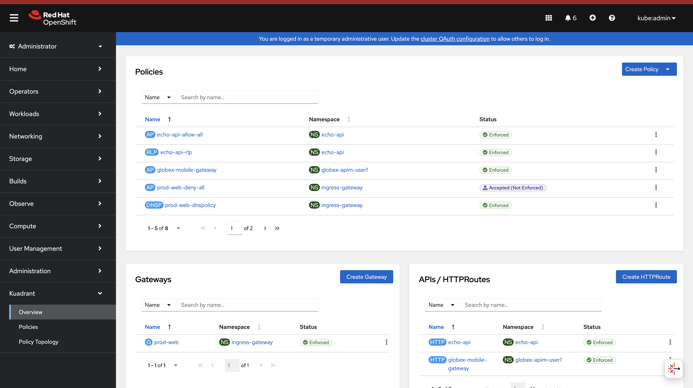
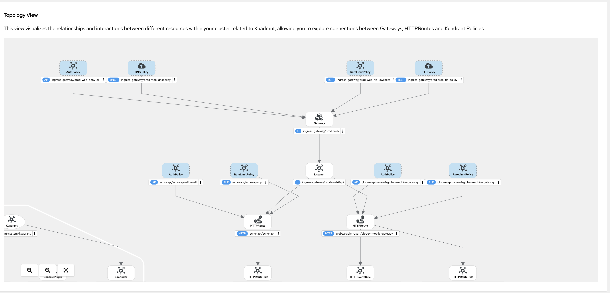
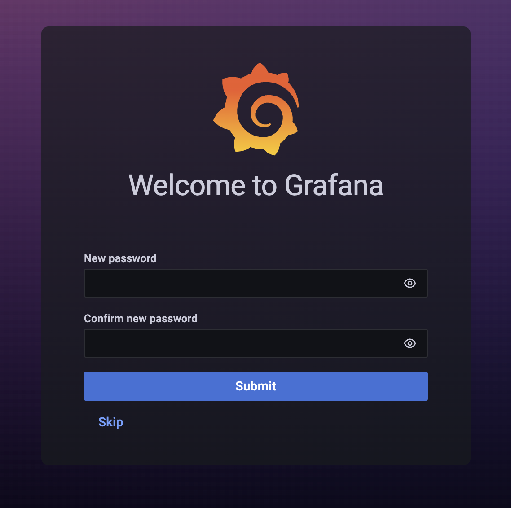
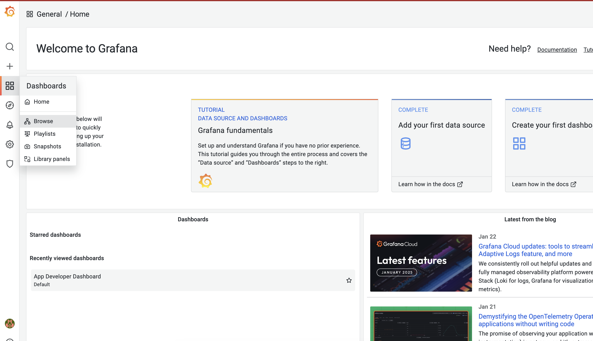
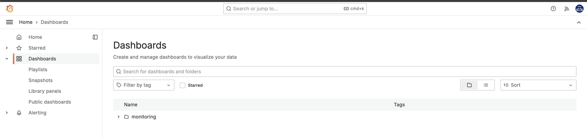
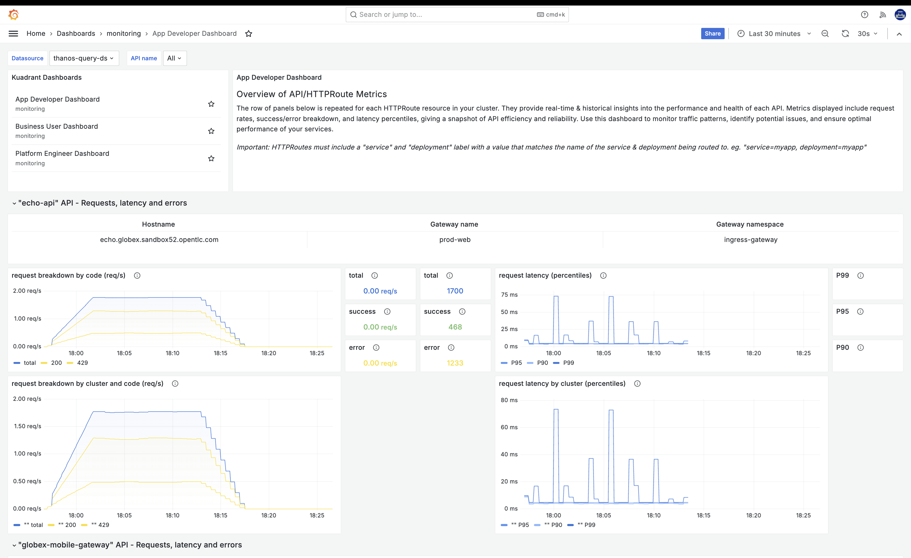
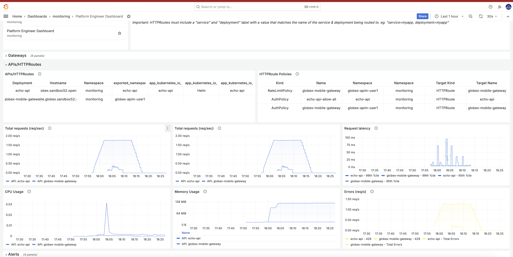
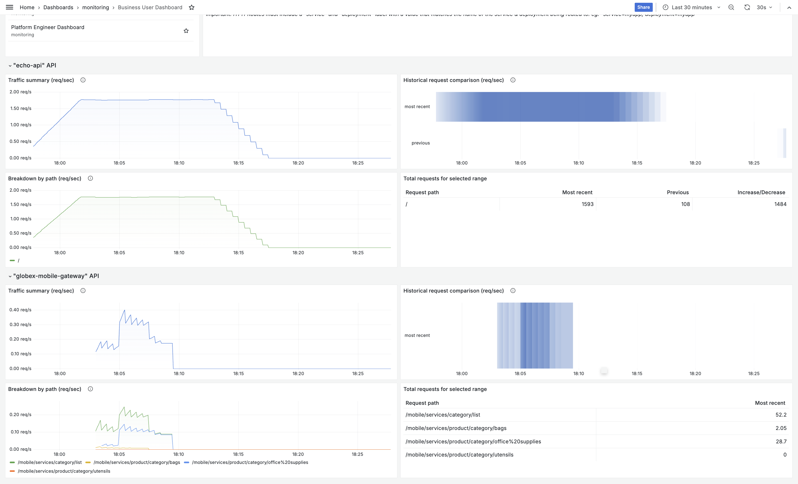

Solution Patterns: Connect, Secure and Protect with Red Hat Connectivity Link
See the Solution in Action
1. Dynamic Plugin
Connectivity Link provides a Dynamic plugin to help you view the relevant resources from a single pane of glass.
-
Enable this plugin as guided in this interactive demo
-
The plugin’s overview shows all the relevant Kubernetes resources from Gateway API (Gateways and HTTPRoutes) and also the Connectivity Link policies
 -
Here the
(AP) prod-web-deny-allis marked asAccepted (Not Enforced), because this AuthPolicy is accepted, but is overridden by the other policies(AP) echo-api-allow-alland(AP) globex-mobile-gateway -
Explore the policies from one single place.
-
The Policy Topology view visualizes the relationships and interactions between different resources within your cluster related to Kuadrant, allowing you to explore connections between Gateways, HTTPRoutes and Kuadrant Policies.

2. Observability
Connectivity Link provides a variety of starting points for monitoring your Connectivity Link installation in the Kuadrant upstream project (examples from kuadrant.io) folder. These dashboards and alerts are ready-to-use and easily customizable to fit your environment.
The example dashboards uploaded to Grafana.com
Name |
ID |
|
|
|
|
|
-
These dashboards can be accessed via Grafana from here
-
Login with
admin/adminand when prompted useadmin/adminto pick a new passowrd -
From the left-hand navigation, access Dashboards > Browse menu
 -
Click on the Default folder to view the preloaded dahsboards
 -
Click on App Developer Dashboard to view the detail of this Dashboard. You can view both the
echo-apiandglobex-mobile-gateway -
You can the other dashboard by accessing the links to Business User and Plarform Engineer dashboards from the Kuadrant Dashboards section on top-left of this page.
-
Explore the various persona-based dashboards available.
-
Here is a sample Platform Engineer based Dashboard
 -
Here is a sample Business User based Dashboard

3. Conclusion
With this setup, Globex is all set to onboard further service enpoints to be accessed securely. This solution can be further extended to span across a multi-cluster setup too.
We will also extend this pattern to include the all important Observability aspects as well.
Read more here